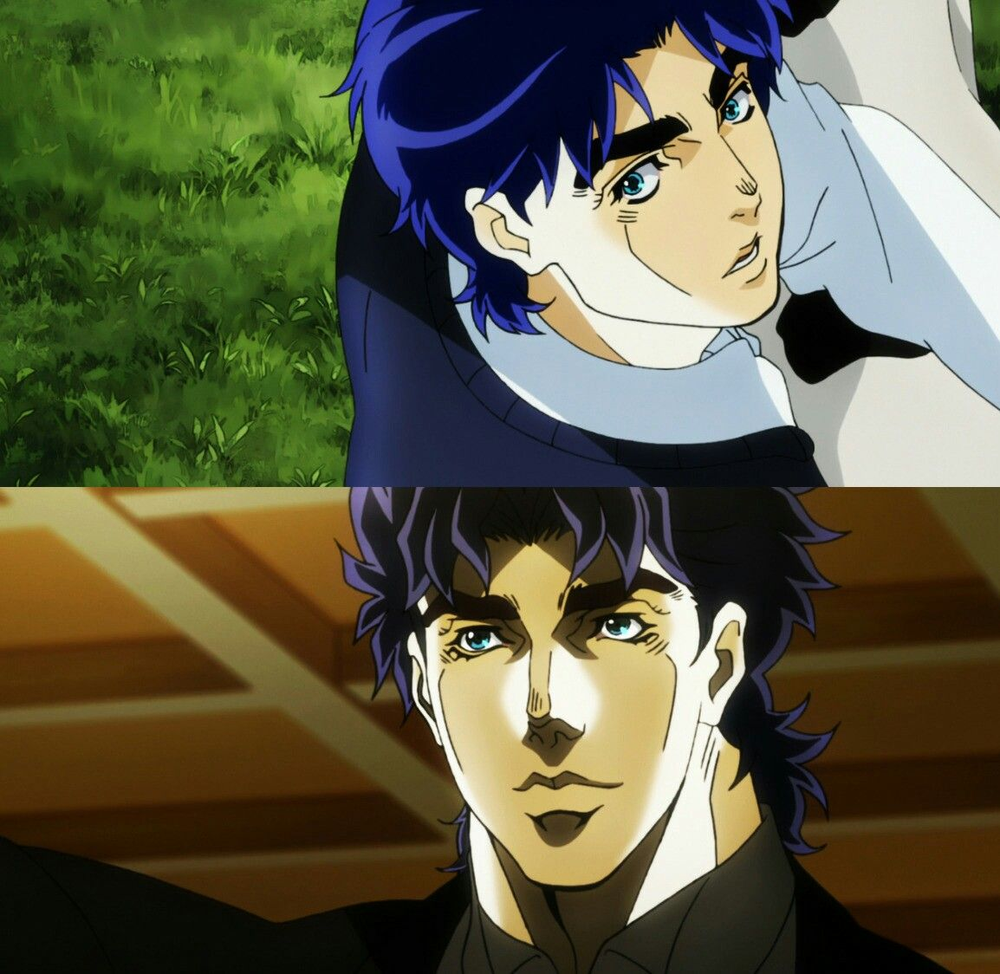

Jojo Phantom Blood

| Início JOJO parte 1 JOJO parte 2 JOJO parte 3 JOJO parte 4 JOJO parte 5 JOJO parte 6 JOJO parte 7 JOJO parte 8 |


Jonathan Joestar (ジョナサン・ジョースター Jonasan Jōsutā) é o protagonista da primeira parte de Jojo no Kimyō no Bōken: Phantom Blood, e o primeiro JoJo da série. Seu legado se estende por quase todas as seis primeiras partes da série, com personagens importantes como Joseph Joestar e Jotaro Kujo sendo seus descendentes.
Phantom Blood (ファントムブラッドFantomu Buraddo ) é a primeira parte de JoJo's Bizarre Adventure . Foi originalmente serializado na Weekly Shonen Jump de dezembro de 1986 a outubro de 1987 sob o título de JoJo's Bizarre Adventure Part 1 Jonathan Joestar: His Youth , e foi coletado em cinco volumes pela Jump Comics . O título Phantom Blood foi usado oficialmente pela primeira vez no livro JOJO A-GO!GO! , e depois usado para o lançamento do mangá Bunkoban .
A parte recebeu duas adaptações de anime : um filme de 2007 do Studio APPP e uma série de TV de 2012 da David Production . Também foi adaptado em um jogo de PlayStation 2 de 2006 pela Anchor Inc. e Bandai .
A história segue Jonathan Joestar enquanto ele amadurece e eventualmente luta contra seu irmão adotivo, o astuto e impiedoso Dio Brando .